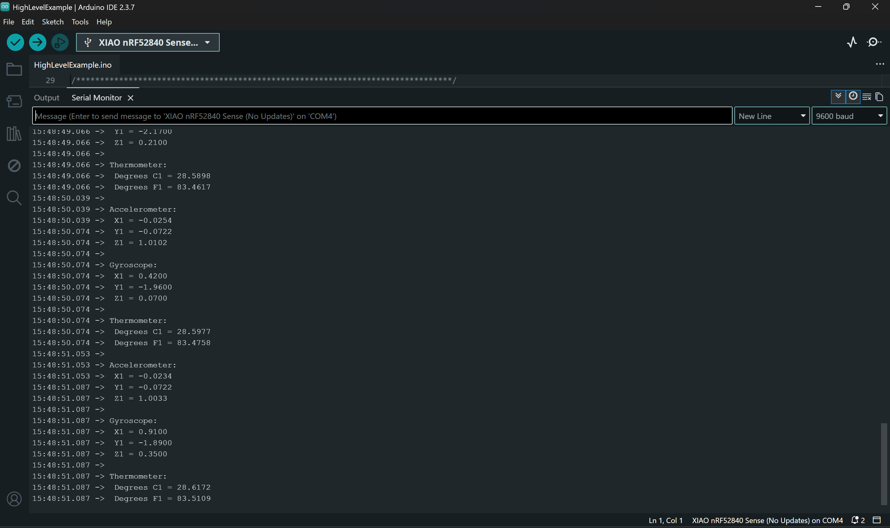
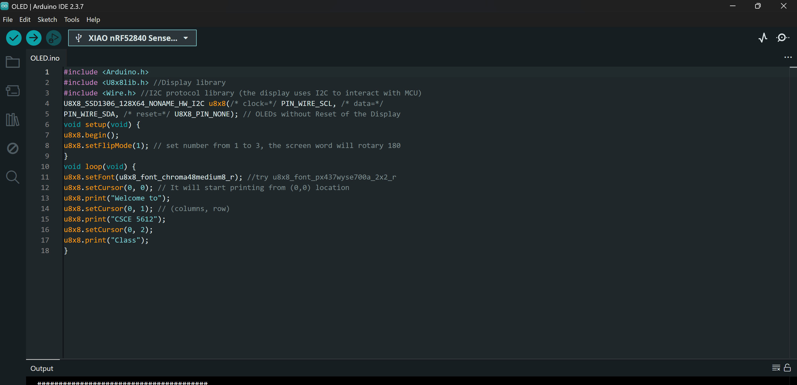
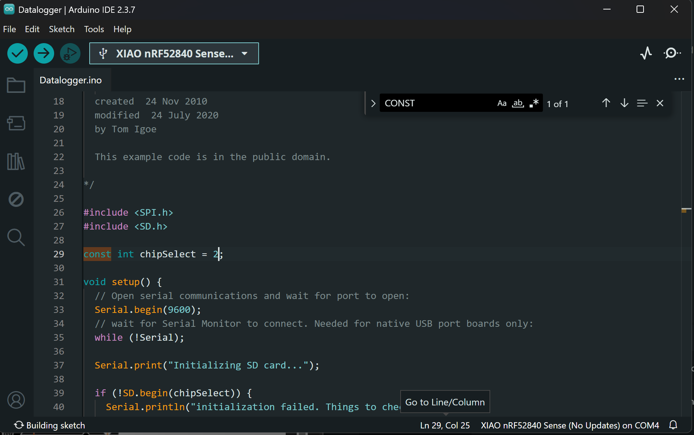
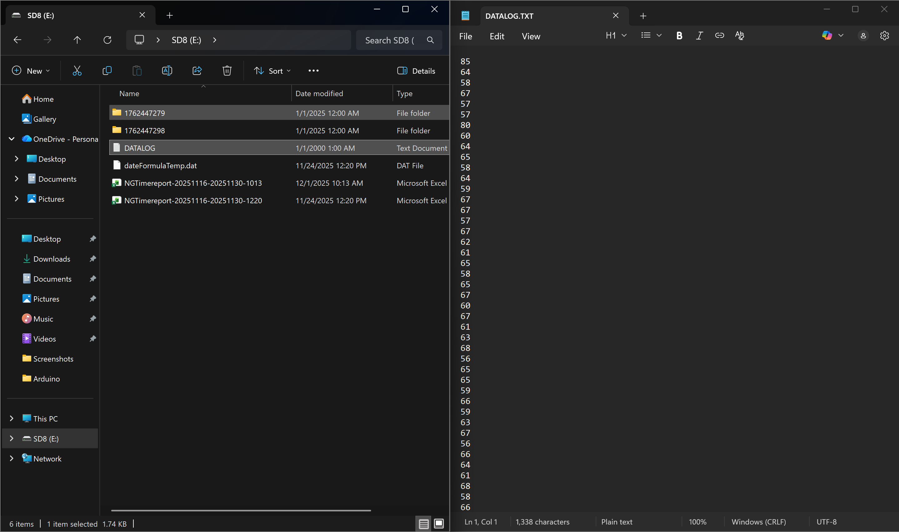
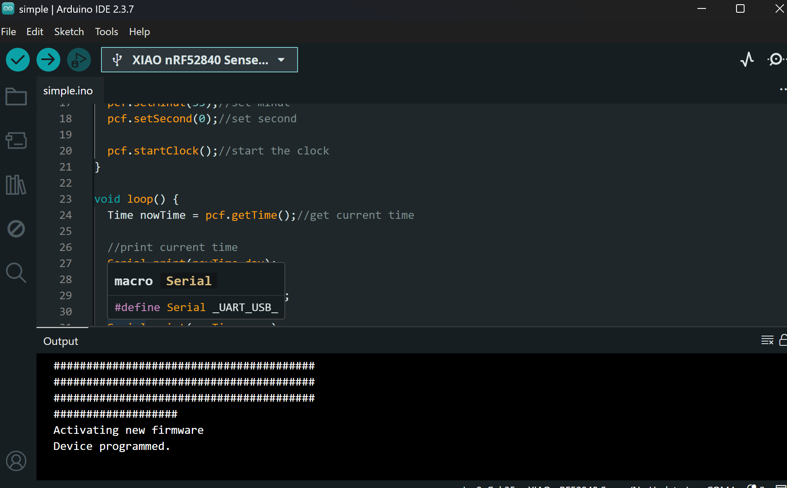
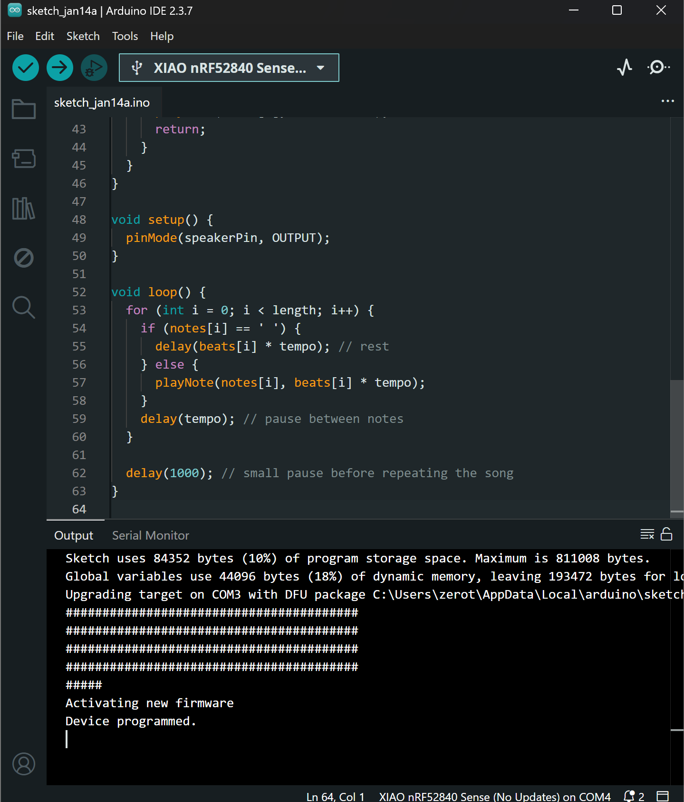

This page contains screenshots/photos and short descriptions for each completed step.
Assembled the board and connected the setup.

Uploaded Blink code and verified LED blinking.


Verified IMU sensor output on Serial Monitor.
Checked audio signal on Serial Plotter.


Displayed text on OLED screen.
Ran datalogger and confirmed data stored.
 Verified RTC time output.
Ran the buzzer sketch and verified sound output.
